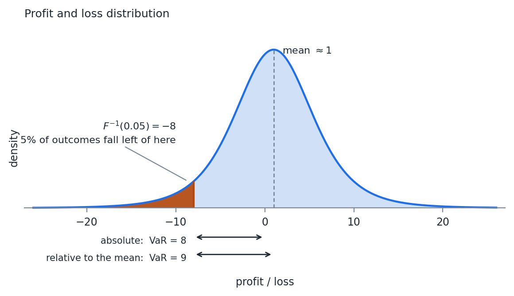

FinTech 545 — Week 04
Financial data is often quoted as prices. Prices are non-stationary, so our assumptions for modeling do not hold.
Everything in Weeks 01 through 03 assumed a series with a stable mean and variance. A price series has neither.
A stock at $40 last year and $90 today has no mean to estimate, and the variance of its level grows with the length of the sample.
Today’s price is some function of yesterday’s price, plus whatever new information arrived today. Prices are generally assumed to be positive.
Three classical ways to write that function:
P_t = P_{t-1} + r_t
P_t = P_{t-1}\left( 1 + r_t \right)
P_t = P_{t-1} e^{r_t}
| System | Price process | Additive across | Prices stay positive |
|---|---|---|---|
| Classical Brownian | P_t = P_{t-1} + r_t | assets and time | no |
| Arithmetic | P_t = P_{t-1}(1+r_t) | assets | only if r_t > -1 |
| Geometric | P_t = P_{t-1}e^{r_t} | time | yes |
The third column is why we keep all three. No system is additive both across assets and across time, so the choice depends on which direction the sum runs.
The least used of the three. There is no good way to assure prices stay above zero.
It survives in commodity applications, where we are often concerned with the price difference between two physical locations, called the basis.
Basis can and often does change sign, so the one property that disqualifies the system elsewhere is the property we need here.
Used in portfolio management. Let h_i be the holding of asset i, w_{i,t} its weight, and PV_t the portfolio value.
PV_t = \sum_{i=1}^{n} h_i P_{i,t}, \qquad w_{i,t} = \frac{h_i P_{i,t}}{PV_t} \Rightarrow \sum_{i=1}^{n} w_{i,t} = 1
PV_{t+1} = \sum_{i=1}^{n} h_i P_{i,t}\left( 1 + r_{i,t} \right) = PV_t \left( 1 + R_t \right)
PV_t + \sum_{i=1}^{n} h_i P_{i,t} r_{i,t} = PV_t + PV_t R_t \Rightarrow \sum_{i=1}^{n} w_{i,t} r_{i,t} = R_t
A portfolio return is a weighted sum of asset returns, exactly, with no approximation.
Fact 7 from Week 02 then gives the portfolio variance directly, and the whole of Delta Normal VaR follows from it.
Prices built from arithmetic returns can go negative if the return drops below -1.
We usually assume normal returns, with a volatility low enough that the boundary rarely comes into play.
You will see arithmetic returns in the literature on the cross section of returns, where additivity inside a single time period makes the math easy.
Used when looking through time. Returns are additive with time.
P_{t+1} = P_t e^{r_t} \Rightarrow P_T = P_0 e^{\sum_{t=0}^{T-1} r_t}
\ln\left( P_{t+1} \right) = \ln\left( P_t \right) + r_t
If r_t \sim N(\mu, \sigma^2), then
\ln\left( P_{t+1} \right) \sim N\left( \mu + \ln P_t,\ \sigma^2 \right) \Rightarrow P_{t+1} \sim LN\left( \mu + \ln P_t,\ \sigma^2 \right)
Week 01 gave the lognormal as a density. This is the same distribution arrived at from the process.
Taking the log converts a multiplicative price process into an additive one, and the normal is closed under addition.
That closure is the only reason the T period distribution is available in closed form. The multi-day section at the end of the week uses it directly.
Assets distribute cash or undergo changes that make the raw price series not indicative of total return:
The fix is a total return price series, which assumes any proceeds are reinvested back into the security.
Maintaining a database of these means recomputing history whenever an event lands, or storing the total return values instead.
The historical levels of a total return series are not prices anyone ever traded at, and they change every time a new dividend is paid.
Only the returns are stable.
Most data sources provide a price series, a total return price series, or both. On Yahoo! Finance the “ADJ CLOSE” column is the total return series.
A dividend paying stock analyzed on price alone shows a loss on every ex-dividend date.
That looks like a series of small negative shocks that never reverse.
Every moment estimated off that series is wrong, and the error is largest for exactly the high yielding names a risk report cares about.
Risk is the possibility of financial loss, and it is quantified in numerous ways.
Portfolio management often uses the standard deviation of returns. We return to that when we cover portfolio construction.
Value at Risk attempts to answer a different question. Under normal market conditions, what is the minimum we can expect to lose on an \alpha% bad day.
VaR is not the maximum loss.
Most models calibrate to recent history. Regimes shift, and what was normal yesterday is abnormal today.
Losses in a market that is not normal can be an order of magnitude larger than VaR.
Markets are hard to model, and extreme events happen with higher probability than most modeling would assume.
Mathematically, VaR is the \alpha percentile of the profit and loss distribution.
VaR_{\alpha}(x) = -F_x^{-1}(\alpha)
We negate so that a positive number is a loss and a negative number is a gain.
That is the Week 01 quantile function with a minus sign in front of it. Every method this week is a different way of getting at F.

VaR as a percentile of the profit and loss distribution
VaR is reported two ways in practice. It is always helpful to ask which is intended.
In risk management we mostly care about the loss, so the first is usually sufficient.
Comparing two portfolios on both expected return and risk generally calls for the second definition.
At a one day horizon the two agree to within rounding, because the mean daily return is small next to the daily standard deviation.
At a one year horizon they do not, and the gap is the entire expected return of the portfolio.
The largest criticism has to do with the fact that models have a hard time describing price movements in finance.
VaR is the minimum loss under normal markets. Managing risk solely to VaR leads investors into a false sense of security.
The second complaint is structural. VaR is not subadditive when the distribution is non-elliptical.
A subadditive measure satisfies
q(P_1) + q(P_2) \geq q(P_1 + P_2)
Risk should be subadditive. It is hard to construct a case where investing in one asset makes a second asset more risky.
Diversification, at worst, has no effect when things are perfectly correlated.
Two independent assets, each with standard deviation 1, held in equal weights, multivariate normal.
q(0.5 P_1 + 0.5 P_2) = \sqrt{0.5^2 \cdot 1 + 0.5^2 \cdot 1} = 0.5\sqrt{2} = 0.707
q(0.5 P_1) = q(0.5 P_2) = 0.5
q(0.5 P_1) + q(0.5 P_2) = 1 > 0.707
If returns are multivariate normal, VaR is a multiple of the standard deviation:
\alpha = 0.05 \Rightarrow VaR \approx 1.65\, \sigma_P
VaR inherits subadditivity from the quantity it is a multiple of.
The problem is not VaR itself. It is VaR applied to a distribution that is not elliptical.
Break the normality assumption.
Two independent bonds. Each costs $90 and pays $100 next period if it does not default. Each has a 4% chance of default. You have $180.
Buy two of either bond, or one of both. Set \alpha = 0.05.
Default happens in the 4% worst case, so in the 5% worst case the bond does not default.
Two of the same bond pay $200 on a $180 cost.
VaR = -\$20
Negative, because the 5% loss is still a profit.
With one of each, the probability that at least one defaults is
P(n_{\text{default}} \geq 1) = 1 - (1 - 0.04)^2 = 0.078
That is above 5%, so the 5% worst case now contains a default. One bond returns nothing on its $90, the other pays $100 on its $90.
-90 + 10 = -80 \Rightarrow VaR = 80
q(P_1) = q(P_2) = -10, \qquad q(P_1 + P_2) = 80
q(P_1) + q(P_2) \geq q(P_1 + P_2)
does not hold. -20 is not greater than 80.
Splitting the position moved probability mass across the 5% threshold.
Concentrated, the bad event sits at 4% and VaR never sees it. Diversified, it sits at 7.8% and VaR reports it in full.
A measure that reads a single quantile is blind to everything on the far side of it, and diversification moves things across.
This makes VaR non-coherent as a risk measure.
But we still use it.
Week 05 covers Expected Shortfall, which averages over the tail instead of reading one point on it, and is subadditive as a result.
Two assumptions: payoffs are linear, and returns are multivariate normal.
Together they give a closed form solution.
\alpha = 0.05 \Rightarrow VaR_{ret} \approx 1.65\, \sigma_P
That is VaR expressed as a return. Transform it into a price to get a dollar value.
Arithmetic returns:
VaR_{\$} = P_0 - P_0\left( 1 + \mu - VaR_{ret} \right) = P_0 VaR_{ret} - P_0 \mu
Geometric returns:
VaR_{\$} = P_0 - P_0 e^{\mu - VaR_{ret}}
Close but not exact. Know how your returns were calculated and use the matching version.
From here out we assume \mu = 0.
Break the change in portfolio value into per price pieces:
\Delta PV = \sum_{i=1}^{n} d_i \Delta P_i
With arithmetic returns and the \Delta function read as the return,
R = \sum_{i=1}^{n} d_i r_i
We use arithmetic returns because they are summable across the portfolio. What is left is to find d_i.
Read the expression as a Taylor polynomial and d_i is the first derivative of portfolio value with respect to price i.
We do not hold prices, we hold positions, so the chain rule gives two derivatives:
\frac{dR}{dr_i} = \frac{dR}{dRA_i} \frac{dRA_i}{dr_i}
The first is the weight w_i. Hold 50% of the portfolio in an asset that returns 5%, and the portfolio moves 2.5%.
The derivative of the asset return with respect to the price return requires a pricing function.
\Delta A_i \approx \delta\, \Delta P_i, \qquad \delta = \frac{dA_i}{dP_i}
r_i = \frac{\Delta P_i}{P_i}, \quad RA_i = \frac{\Delta A_i}{A_i} \Rightarrow RA_i \approx \frac{\delta P_i r_i}{A_i}
\frac{dRA_i}{dr_i} = \frac{\delta P_i}{A_i}
For a stock the pricing function is the price of the stock, so \delta = 1.
The price of the asset and the price of the underlying are the same, and a 1% change in the price causes a 1% change in the value of the position.
Everything harder than a stock is a different \delta in the same formula.
Derivatives are additive. If m assets are affected by price i:
\frac{dR}{dr_i} = \sum_{j=1}^{m} w_j \frac{dRA_j}{dr_i} = P_i \sum_{j=1}^{m} \frac{w_j \delta_j}{A_j}
Recognizing that w_j = \frac{h_j A_j}{PV}, the same thing in holdings:
\frac{dR}{dr_i} = \frac{P_i}{PV} \sum_{j=1}^{m} h_j \delta_j
Use whichever matches how the problem was set up.
With the gradient \nabla R and multivariate normality:
R \sim N\left( \nabla R^T \mu,\ \nabla R^T \Sigma\, \nabla R \right)
\nabla R collapses any number of positions into one exposure per underlying price.
The normal is closed under linear transforms, so the portfolio return is normal with a variance we can write down.
With \mu_i = 0 for all i:
VaR(\alpha) = -PV \cdot F_X^{-1}(\alpha) \cdot \sqrt{\nabla R^T \Sigma\, \nabla R}
F_X^{-1}(\alpha) is the quantile function for the standard normal. At \alpha = 0.05 that value is -1.645, and the leading minus sign is what turns it back into a positive loss.
\Sigma = \begin{pmatrix} 0.01 & 0.0075 \\ 0.0075 & 0.0225 \end{pmatrix}
Assets 1 and 2 both depend on P_1, so their sensitivities add:
\frac{dR}{dr_1} = \frac{7}{270}\left( 10 \cdot 0.5 + 20 \cdot 1 \right) = 0.6481
\frac{dR}{dr_2} = \frac{10}{270}\left( 5 \cdot 1 \right) = 0.1852
\sqrt{\nabla R^T \Sigma\, \nabla R} = 0.0823
VaR = -270 \cdot (-1.645) \cdot 0.0823 = \$36.55
Remove the PV from the equation and the same calculation gives VaR as a percentage:
VaR = -(-1.645) \cdot 0.0823 = 13.54\%
0.6481 + 0.1852 = 0.833.
The portfolio is not fully exposed to its own prices, because asset 1 carries a delta of 0.5 rather than 1.
A gradient that sums to something other than 1 is normal. A gradient you cannot explain is a bug.
Two big issues with Delta Normal VaR.
Issue 2 has a sign we can predict.
The second derivative of an option value with respect to the underlying price is called gamma, and Week 06 covers it in full.
Long gamma: the linear approximation understates the value on both sides, so Delta Normal overstates the loss.
Short gamma: Delta Normal understates the loss. That is the direction that matters.
The two remaining methods each attack one of the assumptions.
Monte Carlo VaR keeps the normality assumption and drops the linearity assumption.
Historical VaR drops both.
Asset pricing functions can be, and often are, non-linear. That makes the return distribution of the asset not well defined, so we estimate it by simulation.
We are still assuming returns are multivariate normal.
What we are no longer assuming is that the portfolio is a linear function of them, so we reprice rather than differentiate.
Step 2 is the Week 03 multivariate draw algorithm, unchanged.
Step 4 is where the cost is. A full revaluation of every position on every draw, which for a book of American options is the difference between a calculation that runs in a second and one that runs overnight.
Sort the portfolio values and pick the N\alpha value from the vector. For a large number of draws that is sufficient.
If the number of draws is small, a Kernel Density Estimate or another smoothing technique may provide better results.
https://stats.stackexchange.com/questions/341023/quantile-of-kernel-density-estimator
Both issues with Delta Normal VaR, that returns are not normal and asset prices are not always linear, are sometimes addressed with Historical VaR.
It looks much like Monte Carlo VaR, but instead of using a model for returns we assume observed past returns mimic the distribution.
Historical VaR is a non-parametric statistic. We make no distributional assumptions on returns.
Only step 2 changed.
Sampling whole rows rather than individual returns is what preserves the correlation structure.
There is no covariance matrix anywhere in this method, and no assumption that dependence is linear, because the joint behavior comes along with the row.
| Delta Normal | Monte Carlo Normal | Historical | |
|---|---|---|---|
| Returns | multivariate normal | multivariate normal | sampled from history |
| Payoffs | linear | any | any |
| Dependence | \Sigma | \Sigma | whatever occurred |
| Cost | closed form | N revaluations | N revaluations |
| Main weakness | both assumptions | fat tails | limited history |
This is the choice in practice.
Nothing in the first two columns can produce a loss larger than the normal allows.
Nothing in the third column can produce a loss that has not already happened.
Historical VaR still suffers from recency bias. Often there is not enough history to show all regimes, so a limited sample is selected.
Using a KDE to smooth the estimate is highly recommended.
We can weight historical values, much as we added weights for the exponentially weighted covariance estimate.
Without weights each day has an equal chance of being selected. Weights alter that probability.
With m days of history and weight w_i on day i:
\sum_{i=1}^{m} w_i = 1, \qquad cw_i = \sum_{j=1}^{i} w_j\ \ \forall\ i \in 1:m
r \sim U(0,1), \qquad \min(i)\ \text{where}\ r \leq cw_i
This is the inverse CDF method from Week 03, applied to a discrete distribution over historical days.
The Week 03 effective sample size discussion applies unchanged, and it bites harder here.
A weighted historical VaR at \lambda = 0.94 is estimating a 5% quantile from roughly 32 effective observations.
That puts one or two days in the tail.
Multi-day dynamics need more data to estimate than one day ahead dynamics do.
The usual shortcut assumes returns are summable across time, which means geometric returns.
R_T = \sum_{t=1}^{T} R_t, \quad R_t \sim N(\mu, \sigma^2)\ iid \Rightarrow R_T \sim N\left( T\mu,\ T\sigma^2 \right)
Assuming \mu = 0:
VaR_t(\alpha) = -PV \cdot F_X^{-1}(\alpha) \cdot \sigma
VaR_T(\alpha) = -PV \cdot F_X^{-1}(\alpha) \cdot \sqrt{T}\, \sigma = \sqrt{T}\, VaR_t(\alpha)
The rule needs all three assumptions in that line. Normality, independence across time, and constant variance.
Volatility is not constant. Large moves cluster, and the level itself shifts between regimes.
Week 02 modeled the clustering with GARCH and Week 03 handled the level shifts with an exponentially weighted estimator. Neither is compatible with a fixed \sigma scaled by \sqrt{T}.
Serial correlation in the returns breaks the independence assumption in the same line.
Both effects push the true multi-day risk above what the rule reports, and both grow with T.
This estimation is often good enough. Where it is not:
Arithmetic returns. Simulate T \times N random normals instead of N. Compound the returns across time, then price the portfolio.
Geometric returns. Geometric returns are summable across time and we have assumed normality, so the T period ahead distribution is known. Multiply every element of the covariance matrix by T, and the mean vector if you use one. Simulate N values, convert to prices, price the portfolio.
Path matters under arithmetic returns. Compounding is multiplicative while the returns are added, so the T period distribution is not normal and has to be simulated.
Under geometric returns the path drops out and only the sum matters, which is why scaling \Sigma works.
A lot of data. Segregate history into M non-overlapping periods of length T and sample from those.
Not much data. Segregate into M overlapping periods.
The overlapping version can bias the estimate. The samples are no longer independent, and the same extreme day appears in T different periods.